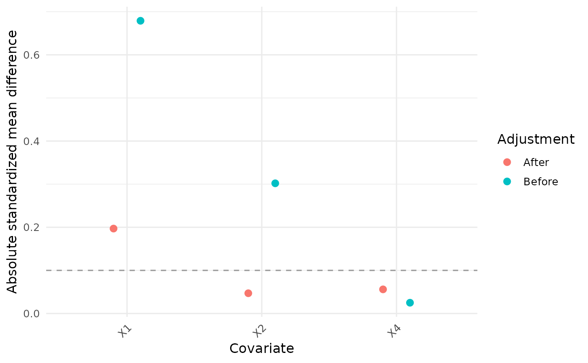

Display and subset PDRobust objects
Source:R/Mapping.R, R/data_validation.R, R/methods.R
pd_methods.RdPrint methods display mappings, validation reports, diagnostic tables, treatment-effect estimates, or sensitivity summaries. Plot methods display the stored diagnostic or treatment-effect plot without refitting a model.
Usage
# S3 method for class 'pd_mapping'
print(x, ...)
# S3 method for class 'pd_data_check'
print(x, ...)
# S3 method for class 'pd_data'
x[...]
# S3 method for class 'pd_hte_timevarying'
print(x, ...)
# S3 method for class 'pd_hte_pooled'
print(x, ...)
# S3 method for class 'PSDiag'
print(x, ...)
# S3 method for class 'PrinSDiag'
print(x, ...)
# S3 method for class 'odds_ratios'
print(x, ...)
# S3 method for class 'QR'
print(x, ...)
# S3 method for class 'SA'
print(x, ...)
# S3 method for class 'pd_hte_timevarying'
plot(x, ...)
# S3 method for class 'pd_hte_pooled'
plot(x, ...)
# S3 method for class 'PSDiag'
plot(x, ...)
# S3 method for class 'PrinSDiag'
plot(x, ...)
# S3 method for class 'odds_ratios'
plot(x, ...)Arguments
- x
An object returned by a PDRobust function, of the class indicated by the method. Subsetting applies to a
pd_datadata frame returned byDataStandard().- ...
For subsetting, arguments passed to the next
[method, including row and column indices anddrop. For printing and plotting, additional arguments are accepted for generic compatibility but ignored.
Value
Print methods display the principal numeric or tabular result and
return x invisibly. If the result stores a user-facing plot, its print
method also draws that same plot; SA objects draw each stored sensitivity
plot. Plot methods return the stored ggplot object invisibly. Subsetting
returns the selected data; when the
result is a data frame, mapping and audit attributes and the pd_data
class are retained.
Details
Subsetting copies metadata without recomputing validation or audit
reports. Revalidate changed data before analysis; deleting rows or columns
can invalidate the required panel structure. QR() supplies numeric and
tabular summaries and has a print method, but no package-specific plot
method. Plot the returned table directly if a custom display is needed.
Examples
data("BiSample", package = "PDRobust")
map <- Mapping(
id = "id", time = "time", treatment = "A", survival = "S", outcome = "Y",
baseline_time = 0, cutoff_time = 2,
covariates = c("X1", "X2", "X4"),
interest_vars = c("X1", "X2"), y_type = "B"
)
print(map)
#> PDRobust data mapping and analysis settings.
#> ID: id
#> Time: time
#> Treatment: A
#> Survival: S
#> Outcome: Y
#> Baseline time: 0
#> Cutoff time: 2
#> Mapped covariates: X1, X2, X4
#> Interest variables: X1, X2
#> Outcome type: B (binary)
print(DataCheck(BiSample, map))
#> PDRobust data-validation results and readiness summary.
#> Manual resolution required: NO
#> Ready for analysis: YES
#> check passed severity
#> required_columns TRUE error
#> nonempty_data TRUE error
#> missing_id_or_time TRUE error
#> time_encoding TRUE warning
#> mapping_time_endpoints TRUE error
#> analysis_time_grid TRUE error
#> duplicate_id_time_records TRUE error
#> complete_longitudinal_structure TRUE error
#> treatment_encoding TRUE warning
#> survival_encoding TRUE warning
#> treatment_consistency_within_subject TRUE error
#> survival_consistency_within_subject TRUE error
#> outcome_type_and_encoding TRUE warning
#> structural_outcome_missingness_after_death TRUE information
#> outcome_observed_after_death TRUE error
#> outcome_missingness_among_survivors TRUE error
#> missing_covariates TRUE error
#> time_coding_and_order TRUE warning
#> id_coding TRUE warning
#> treatment_group_availability TRUE error
#> covariate_variation TRUE warning
#> retained_sample_after_optional_dropping TRUE information
#> standardize_can_fix requires_manual_resolution analysis_blocking
#> FALSE FALSE TRUE
#> FALSE FALSE TRUE
#> FALSE FALSE TRUE
#> FALSE FALSE FALSE
#> FALSE FALSE TRUE
#> FALSE FALSE TRUE
#> FALSE FALSE TRUE
#> FALSE FALSE TRUE
#> FALSE FALSE FALSE
#> FALSE FALSE FALSE
#> FALSE FALSE TRUE
#> FALSE FALSE TRUE
#> FALSE FALSE FALSE
#> FALSE FALSE FALSE
#> FALSE FALSE TRUE
#> FALSE FALSE TRUE
#> FALSE FALSE TRUE
#> TRUE FALSE FALSE
#> TRUE FALSE FALSE
#> FALSE FALSE TRUE
#> FALSE FALSE FALSE
#> FALSE FALSE FALSE
#> details
#> 8 required columns are present.
#> 1200 rows detected.
#> No rows have missing ID or time.
#> Time class: integer ; values can be ordered numerically.
#> baseline_time = 0 ; cutoff_time = 2 ; observed times = 0, 1, 2 .
#> All actual observed times from baseline through cutoff are included: 0, 1, 2 .
#> No duplicated ID-time pairs were found.
#> 400 of 400 subjects ( 100 %) have exactly one record at every required time; 0 are missing at least one visit. Missing counts by time: 0=0, 1=0, 2=0 .
#> Class: integer ; values: 1, 0 ; missing rows: 0 ; invalid rows: 0 ; affected subjects: 0 .
#> Class: integer ; values: 1, 0 ; missing rows: 0 ; invalid rows: 0 .
#> 0 subjects change treatment over follow-up.
#> 0 subjects transition from S = 0 back to S = 1.
#> Binary outcome class: integer ; values: 0, 1 ; invalid rows: 0 .
#> 114 records ( 9.5 %) have S = 0 and Y = NA; this is expected structural missingness.
#> 0 records have S = 0 and an observed outcome.
#> 0 records across 0 subjects have S = 1 and Y = NA. Counts by time: 0=0, 1=0, 2=0 .
#> X1=0 records/0 subjects (0%); X2=0 records/0 subjects (0%); X4=0 records/0 subjects (0%)
#> Raw times: 0, 1, 2 ; rows are ordered by ID and time.
#> ID class: integer ; 400 unique nonmissing subjects; consecutive integer coding.
#> Baseline subjects: treatment 0 = 71 ; treatment 1 = 329 .
#> No mapped covariate has constant or near-zero variation.
#> 400 subjects are present before optional standardization-time deletion.
#> recommendation
#> Correct the mapping or add/rename the missing columns manually.
#> Supply a nonempty long-format data set.
#> Restore the identifiers/time values, or use `drop = TRUE` to remove unidentifiable rows.
#> Standardization will map required raw times to internal integers 0, 1, ..., n.
#> Correct the mapping or the underlying time coding before analysis.
#> Correct the mapped endpoints or underlying time records. All observed visits within the mapped window are retained.
#> Manually choose an aggregation or record-selection rule; duplicates are never silently retained.
#> Recover missing records, shorten the mapped window, or use `drop = TRUE` for an explicitly reported complete-case analysis.
#> Standardization safely converts explicit FALSE/TRUE or "0"/"1" encodings to integer 0/1; missing treatment requires `drop = TRUE` or manual recovery.
#> Standardization safely converts explicit binary encodings; missing status requires `drop = TRUE` or manual recovery.
#> Verify baseline treatment coding or use a method designed for time-varying treatment.
#> Correct the survival history manually; automatic repair is unsafe.
#> No outcome recoding is required.
#> Do not impute these outcomes or replace them with observed zeros.
#> Verify and remove or recode these outcomes manually; the package will not silently alter observed values.
#> Handle survivor outcome missingness using a study-appropriate method, or use `drop = TRUE` for an explicitly reported subject-level deletion.
#> Impute or otherwise handle missing covariates externally, or use `drop = TRUE` for reported complete-case deletion.
#> Standardization sorts records and maps the analysis grid to integers 0, 1, ..., n.
#> Standardization preserves an ID audit map and assigns consecutive integer IDs.
#> Revise the analysis population or mapping; both groups are required.
#> Remove or revise problematic covariates before model fitting.
#> If `drop = TRUE` is used, review the attached attrition report before interpretation.
prepared <- DataStandard(BiSample, map)
prepared[1:3, ]
#> id time Pi S1 S0 S A Y1 Y0 Y X1 X2 X3 X4 X5 X6
#> 1 1 0 0.987 1 1 1 1 0 1 0 1.479 -0.168 0.873 0 1 1
#> 2 1 1 0.987 1 1 1 1 0 0 0 1.479 -0.168 0.873 0 1 1
#> 3 1 2 0.987 1 1 1 1 0 0 0 1.479 -0.168 0.873 0 1 1
diagnostic <- PSDiag(prepared, A ~ X1 + X2 + X4)
print(diagnostic)
#> Exposure-model balance diagnostics before and after weighting.
#> covariate adjustment smd
#> X1 Before 0.679
#> X2 Before 0.302
#> X4 Before 0.025
#> X1 After 0.197
#> X2 After 0.047
#> X4 After 0.056

p <- plot(diagnostic)